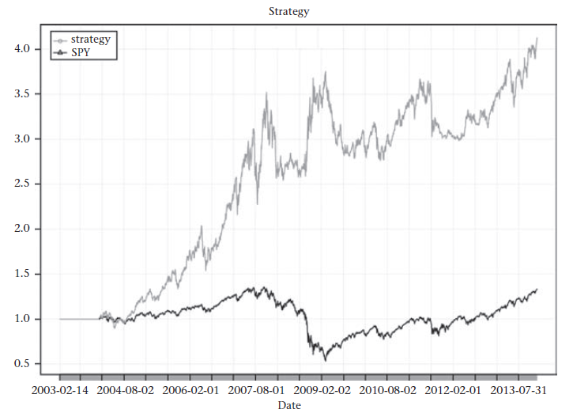
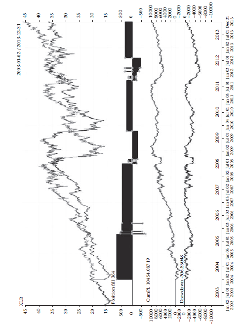
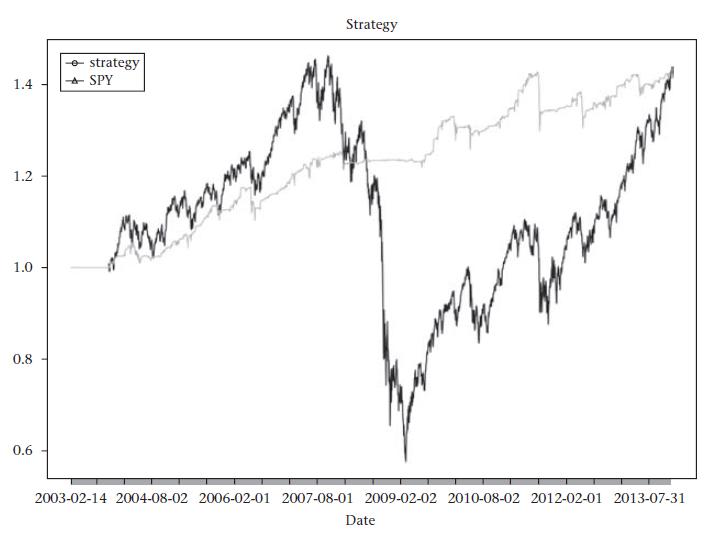
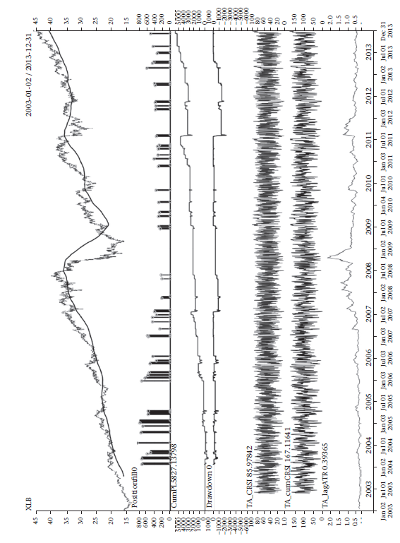

第7章 基于Quantstrat包的回溯测试
在众多数量金融和市场交易的活动中，回溯测试占据了大量的时间。回溯测试是指一套系统的方法用于测试某一个针对市场动态的假设在一段历史数据上是否成立。它与科学方法相通之处在于它尝试得到人为假设与经验观测的一致性，其目标是形成能够产生丰厚利润结果的预测模型。这类方法所暗含的假设前提是历史中出现的模式会很大概率上，在未来重现。当这些历史模式再次被检测到时，我们能够利用预测模型获取利润。广义来讲，回溯测试方法如下：
对已观察到或假设的市场现象提出问题。
做一些背景调查，以确认解答上一步提出的问题需要哪些数据。
构建一个关于这个市场现象是如何工作的模型。
编写代码，实现模型，并用真实的市场数据测试。
观察结果，尝试使理论假设与观测达成一致。
回溯测试与科学方法的不同在于，我们仅有非常有限的历史数据可以采用。同时，市场的动态变化并不受限于物理法则，大多数模式仅在很短的时间内出现，且很大程度上并不遵从不变的物理定律。
回溯测试的方法
回溯测试流程中的第一步需要产生基于历史数据的交易信号。毫无疑问地，这一部分需要投入大量的精力，常常涉及计量及其他复杂的数据分析。
测试流程的第二部分需要设计交易的进场和退出机制。并非所有的市场信号都会导致交易。决定交易是否执行的是一系列的规则，这些规则需要考虑当前头寸，资产限制，组合限制，当前市场数据以及其他由交易者选出的重要变量。
回溯测试的第三部分则需要设计一套机制用于处理交易的会计周期。这一部分在整个系统中尤为重要，因为它确保了交易者正确评估交易策略在整个交易过程中的有效性。联合其他相关的风险指标，我们将在这一步计算投资组合的损益，将其反馈给测试流程的第二部分。在这一步中，我们需要处理大量的繁琐细节，包括标记正确的理论值，合并交易成本，计算相关的每一笔交易并汇总统计。在任何一个回溯测试中，交易成本和滑点（例如：报盘价格和投标价格的偏差）都需要合理地考虑在内。
第四部分，执行模块，可以说是最难整合的一部分。这是系统与外部世界交互的地方。当交易策略决定买入或卖出一些股票时，交易系统需要将订单发送到电子交易所中执行。交易者可与电子交易所直接通讯或通过经济人使用代理通讯通道。无论是哪种途径，在交易者和电子交易所的通讯之间都会有一定程度的延迟和其他一些限制，这会不可避免地影响到交易策略。在现实的回溯测试中，这些影响应该被考虑在内。除非整个路径畅通，否则难以调和回溯测试和交易策略的真实表现。这一点在高频交易或低延迟交易策略中表现得尤为明显。对低频交易来说，执行模块的影响相对较小。
quantstrat包是由专业的量化金融工程师团队开发编写，主要用于研究以高效且简化的方式构建自营交易策略。程序包的设计者在考虑以上所提到的几个部分涉及的问题时十分谨慎，逻辑严密。quantstrat包不仅免费，而且提供了交易员或量化投资者在测试交易策略构想时所需要的大部分功能。值得一提的是，quantstrat包本身并不是一个执行平台。从机构层面来讲，有很多定制工具可供选择。从个人层面来看，盈透（Interactive Broker）1可能是更好的选择。
quantstrat包提供了一系列非常简洁的代码，可用于构建基于信号的交易系统（例如，当13分钟的移动平均值超过48分钟的移动平均值时买入）。更多的，Quantstrat包优于其他回溯测试系统的亮点在于它仍然是R软件的一部分。这意味着仅需调用R软件内嵌的函数就可实现统计指标、信号以及其他规则的设计。这一节是对如何开始使用quantstrat包的简要概括。R/Finance 20132为感兴趣的读者提供了更为深入的介绍[48]。
作为探索，我们将分析两种交易策略。第一种是由Andreas Clenow[1]3设计的简单趋势追踪策略。第二种是由Laurence Connors[65]4设计的基于振荡的策略。
关于blotter和PerfomanceAnalytics包
blotter是一个强大的计算分析程序包，能够处理交易监测过程中的所有细微之处。在后台，quantstrat包大量调用了blotter包。只要quantstrat包中交易规则发起一笔订单，blotter包将全程追踪每一笔交易的盈利情况。这种追踪方式使得我们可以在独立的交易层面进行详细分析和汇总统计。
据程序包作者Peter Carl和 Brian Peterson介绍，PerfomanceAnalytics包含了一系列函数用于评估金融资产和基金的盈利表现以及风险特征。PerfomanceAnalytics包的目标是简化投资者在投资决策过程中关于盈利表现和风险特征等问题的提出与解答[83]。
PerfomanceAnalytic包调用了quantstrat包中画图和统计汇总功能。无论是处理正态还是非正态收益序列，PerfomanceAnalytic包都表现完美，同时它也是评价任何策略的回报vs风险指标的首选工具。在后台，它调用xts函数来有效且快捷地处理这类数据。PerfomanceAnalytic包主要集中处理交易策略表现，交易类型以及风险分析。有关这些模块的内容和实现过程可以在尾注5中查阅。
与矩分析，联动分析一样，风险价值（value at risk, VAR）计算中也不乏函数工具。稳健数据清理函数和表式汇总函数都是易于获取的好工具，特别在处理凌乱数据时非常有效。
初始设置
或许quantstrat包唯一的缺点是设置交易策略的初始阶段需要一点“样板式”的代码。尽管有一点恼人，但在每个交易策略的开头加载单独一个文件还是很容易的。
接下来的这段代码包含了所有2003年以前发行的指数基金（ETFs）。我们将这段代码放在一个命名为demoData.R的文件中，需要时再调用。这段代码如下：
# 禁止警告
options("getSymbols.warning4.0" = FALSE)
# 清理工作区
rm(list = ls(.blotter), envir = .blotter)
# 设定货币种类和交易时区
currency('USD')
Sys.setenv(TZ = "UTC")
# 定义感兴趣的证券名
symbols <- c("XLB", #SPDR Materials sector
"XLE", #SPDR Energy sector
"XLF", #SPDR Financial sector
"XLP", #SPDR Consumer staples sector
"XLI", #SPDR Industrial sector
"XLU", #SPDR Utilities sector
"XLV", #SPDR Healthcare sector
"XLK", #SPDR Tech sector
"XLY", #SPDR Consumer discretionary sector
"RWR", #SPDR Dow Jones REIT ETF
"EWJ", #iShares Japan
"EWG", #iShares Germany
"EWU", #iShares UK
"EWC", #iShares Canada
"EWY", #iShares South Korea
"EWA", #iShares Australia
"EWH", #iShares Hong Kong
"EWS", #iShares Singapore
"IYZ", #iShares U.S. Telecom
"EZU", #iShares MSCI EMU ETF
"IYR", #iShares U.S. Real Estate
"EWT", #iShares Taiwan
"EWZ", #iShares Brazil
"EFA", #iShares EAFE
"IGE", #iShares North American Natural Resources
"EPP", #iShares Pacific Ex Japan
"LQD", #iShares Investment Grade Corporate Bonds
"SHY", #iShares 1-3 year TBonds
"IEF", #iShares 3-7 year TBonds
"TLT" #iShares 20+ year Bonds
)
# 先SPDR ETFs（交易所交易基金），后iShares ETFs
if(!"XLB" %in% ls()) {
# 如果数据不存在，从yahoo读取
suppressMessages(getSymbols(symbols, from = from,
to = to, src = "yahoo", adjust = TRUE))
}
# 定义证券类型
stock(symbols, currency = "USD", multiplier = 1)总结一下这段代码的含义:
options("getSymbols.warning4.0" = FALSE) 禁止了getSymbols警告的出现。这些警告是由于使用Yahoo（getSymbols的默认来源）提取超过5个以上的字符串而产生，和原来高度冗余的警告一样。这行代码并非强制执行。
rm(list = ls(.blotter), envir = .blotter)的运行清空了工作环境。同样的，这一行也并不要求强制执行，但是如果没有调用ls(.blotter) ， blotter的运行内容将不再显示，所以最好是首先清空运行环境。
接下来的两行代码（currency和Sys）赋予blotter一些关于计价货币种类和交易时区的初始设定。计价货币的设定应该先于其他证券设定。美元（USD）可以作为任何金融证券的计价单位。时区命令行则是必要的事先设定。
getSymbols(symbols, from = from, to = to, src = "yahoo", adjust = TRUE)从Yahoo获取了特定的证券（即事先定义的证券名称长向量）。from和to这两个时间点并没有包含在这个文件中，这两个输入变量保存在交易策略文件中。最后，由于if语句的存在，我们仅需输入rm(XLB)就能再次获得所有数据（例如，不同时段的所有数据对象）。通过这种方式，代码不需重新下载已保存在工作区的证券了。
最后，stock(symbols, currency = "USD", multiplier = 1)预置了我们将要处理的证券。尽管这些是指数基金而不是股票本身，当multiplier设定为1时，作为默认的股票参数函数将仅下载通过getSymbols设定的时间序列。这正是我们想要的结果。
第一个交易策略：简单趋势跟踪
现在我们来回溯测试第一个交易策略。这个策略将用到前面章节的样本数据文件（因为它包含了大部分初始设定代码），构建过程参考Andreas Clenow提出简单交易策略。
我们将使用日频数据测试这个策略。所用到的指标、信号和规则都非常直白。我们采用R软件中的lag()函数构造指标。如果价格高于（低于）一年前价格，策略将发出买入（卖出）的信号。为均衡证券间的风险，我们将以滞后10天的ATR值来限制交易的规模（即，我们使用昨天的ATR值来决定今日下单量），同时我们将每个交易的风险控制在2%左右。 ATR（Average True Range）代表真实波动幅度均值，是一个可通过TTR包调用的指标。
以下代码提供了一个关于交易规模的函数。
"lagATR" <- function(HLC, n = 14, maType, lag = 1, ...) {
ATR <- ATR(HLC, n = n, maType = maType, ...)
ATR <- lag(ATR, lag)
out <- ATR$atr
colnames(out) <- "atr"
return(out)
}
"osDollarATR" <- function(orderside, tradeSize, pctATR,
maxPctATR = pctATR, data, timestamp,
symbol, prefer = "Open", portfolio, integerQty = TRUE, atrMod = "", rebal = FALSE, ...) {
if(tradeSize > 0 & orderside == "short"){
tradeSize <- tradeSize * -1
}
pos <- getPosQty(portfolio, symbol, timestamp)
atrString <- paste0("atr", atrMod)
atrCol <- grep(atrString, colnames(mktdata))
if(length(atrCol) == 0) {
stop(paste("Term", atrString,
"not found in mktdata column names."))
}
atrTimeStamp <- mktdata[timestamp, atrCol]
if(is.na(atrTimeStamp) | atrTimeStamp == 0) {
stop(paste("ATR corresponding to", atrString,
"is invalid at this point in time. Add a logical
operator to account for this."))
}
dollarATR <- pos * atrTimeStamp
desiredDollarATR <- pctATR * tradeSize
remainingRiskCapacity <- tradeSize*maxPctATR – dollarATR
if(orderside == "long"){
qty <- min(tradeSize * pctATR / atrTimeStamp,
remainingRiskCapacity / atrTimeStamp)
} else {
qty <- max(tradeSize * pctATR / atrTimeStamp,
remainingRiskCapacity / atrTimeStamp)
}
if(integerQty) {
qty <- trunc(qty)
}
if(!rebal) {
if(orderside == "long" & qty < 0) {
qty <- 0
}
if(orderside == "short" & qty > 0) {
qty <- 0
}
}
if(rebal) {
if(pos == 0) {
qty <- 0
}
}
return(qty)
}简而言之，第一个（较小的）函数计算了一个滞后的ATR值。第二个函数找到第一个函数的输出结果，并在交易买入（卖出）时通过四舍五入将订单规模定在最低（最高）整股数，这取决于我们的交易规模和风险额度。例如，一个10,000交易规模的风险控制在2%，则我们将买入价值200 个ATR的证券或卖出-200。
以下是策略的设定：
require(quantstrat)
require(PerformanceAnalytics)
initDate = "1990-01-01"
from = "2003-01-01"
to = "2013-12-31"
options(width = 70)
# 再次执行策略，从下面一行开始运行
# demoData.R包括所有数据相关的模板代码
source("demoData.R")
# 交易规模和初始资本设定
tradeSize <- 10000
initEq <- tradeSize * length(symbols)
strategy.st <- "Clenow_Simple"
portfolio.st <- "Clenow_Simple"
account.st <- "Clenow_Simple"
rm.strat(portfolio.st)
rm.strat(strategy.st)
initPortf(portfolio.st, symbols = symbols,
initDate = initDate, currency = 'USD')
initAcct(account.st, portfolios = portfolio.st,
initDate = initDate, currency = 'USD', initEq = initEq)
initOrders(portfolio.st, initDate = initDate)
strategy(strategy.st, store=TRUE)这一段代码非常直白。我们首先加载所需的quantstrat包和PerformaceAnalytics包。初始化三组日期：initData（必须在数据的初始日期之前），初始日期from和结束日期to。接下来，我们初始化交易规模（tradeSize）（例如，每个证券的名义资本）和初始资本。初始资本将在后面用于计算收益。最后我们初始化名称（strategy.st、portfolio.st和account.st），清空交易策略的运行环境（否则，当我们试图重新运行同一个策略时，由于运行环境中已存在一个相同名称的策略，系统会报错），初始化资产组合，账户以及特定交易的交易订单等。最后，我们保存这个策略对象以供后续调用。
回溯测试第一个交易策略
下面这一节展示了如何为回溯测试设置R环境。通过指标、信号和规则的应用设置，很快我们就能构建起交易策略，运行代码，产出分析结果。
首先，信号指标中将要用到的参数和函数设置如下：
nLag = 252
pctATR = 0.02
period = 10
namedLag <- function(x, k = 1, na.pad = TRUE, ...) {
out <- lag(x, k = k, na.pad = na.pad, ...)
out[is.na(out)] <- x[is.na(out)]
colnames(out) <- "namedLag"
return(out)
}我们采用滞后期为252天，风险2%的资本，根据10天ATR值来决定订单规模。
这个函数做了两件事：首先创造了一个滞后的时间序列，这个时间序列中的NA值被替换为当前价格；其次是对输出结果的列向量命名。以下是一个例子：
add.indicator(strategy.st, name = "namedLag",
arguments = list(x = quote(Cl(mktdata)), k = nLag),
label = "ind")
add.indicator(strategy.st, name = "lagATR",
arguments = list(HLC = quote(HLC(mktdata)), n = period),
label = "atrX")
test <- applyIndicators(strategy.st, mktdata = OHLC(XLB))
head(round(test, 2), 253)最后两列的名称是nameLag.ind和atr.atrX。为什么命名为atrX？其实没有什么特别的原因，只是为交易订单规模函数提供一种简洁的方式找到对应的列向量以供使用。
add.indicator语句很好理解。每一个增加的指标都采用add.indicator()函数，包含四个要点参数：
参数strategy。无论何种作用和目的，应用指标的对象一律命名为strategy.st。
参数name。这是指标函数本身。
参数arguments。上述代码采用arguments = list()。其中一个是mktdata（市场数据）对象的形式。
参数label，为列向量命名以方便策略执行阶段调用指标。
让我们再来关注信号函数。我们有四个交易信号：买多入场（a long entry），买多出场（a long exit），卖空入场（a short entry），卖空出场（a short exit）。在quantstrat包中，出场信号等级高于入场信号。即当出场和入场信号同时发生，系统将优先执行出场信号。简而言之，止损反转（stop-and-reverse）策略（与之对应的是百分百策略）将在此起作用。基本上，每一个策略的入场和出场信号至少需要两条规则。因此一个同时有多头和空头的策略需要至少4条规则。下面是回溯测试中的信号设置：
# 信号
add.signal(strategy.st, name = "sigCrossover",
arguments = list(columns = c("Close", "namedLag.ind"),
relationship = "gt"),
label = "coverOrBuy")
add.signal(strategy.st, name = "sigCrossover",
arguments = list(columns = c("Close", "namedLag.ind"),
relationship = "lt"),
label = "sellOrShort")信号的设置格式与指标相同。代码内容包括函数调用、策略名称、期待使用的函数名称、相关参数以及标签。与指标函数类似，信号函数是可自定义的，但quantstrat中包含的信号函数在大部分情况下是能满足需要的。在本章节的后面，我们会看到信号函数的使用令一些策略更加明晰。在下面这个例子中，我们将用到sigCrossover函数。通过relationship参数值的设定，sigCrossover函数可告知策略第一列大于或小于第二列的时间。这里，gt 表示大于， lt表示小于。第一个信号函数能够识别价格大于滞后指标的情况，第二个函数反之。
其他的信号函数有sigComparison（类似sigCrossover，不同在于信号会在符合关系的条件下一直存在，而不是仅存在第一次），sigThreshold （基本上是sigCrossover 的静态值。这个函数在例如基于RSI交易系统这样的振荡型策略中用处很大）和后面我们将接触到的自定义信号函数，sigAND，一个交叉信号载体。
最后，交易系统的第三部分是add.rule函数 。这部分涉及很多quantstrat中交易规则的内容，深入的剖析在本章的讨论范围之外。这里给出一些小例子展示quantstrat中如何自定义交易规则：
# 看涨规则
add.rule(strategy.st, name = "ruleSignal",
arguments = list(sigcol = "coverOrBuy",
sigval = TRUE, ordertype = "market",
orderside = "long", replace = FALSE,
prefer = "Open", osFUN = osDollarATR,
tradeSize = tradeSize, pctATR = pctATR,
atrMod = "X"), type = "enter", path.dep = TRUE)
add.rule(strategy.st, name = "ruleSignal",
arguments = list(sigcol = "sellOrShort",
sigval = TRUE, orderqty = "all",
ordertype = "market", orderside = "long",
replace = FALSE, prefer = "Open"),
type = "exit", path.dep = TRUE)
# 看跌规则
add.rule(strategy.st, name = "ruleSignal",
arguments = list(sigcol = "sellOrShort",
sigval = TRUE, ordertype = "market",
orderside = "short", replace = FALSE,
prefer = "Open", osFUN = osDollarATR,
tradeSize = -tradeSize, pctATR = pctATR,
atrMod = "X"), type = "enter", path.dep = TRUE)
add.rule(strategy.st, name = "ruleSignal",
arguments = list(sigcol = "coverOrBuy",
sigval = TRUE, orderqty = "all",
ordertype = "market", orderside = "short",
replace = FALSE, prefer = "Open"),
type = "exit", path.dep = TRUE)对交易规则而言，在众多quantstrat的回溯测试中只需要记住一个名字，即ruleSignal.一些值得注意的参数设定如下：
sigcol: 这一列包含交易信号。还记得在add.signal 函数中的label吗？add.rule函数这里使用了命名的列来提取所需的信息。
ordertype: 常采用市场订单的格式。可采用限价指令和停止限价指令（仅在止损订单的情况下）
prefer: 因为quantstrat在信号后进入价格柱线（bar），数据频率可覆盖至月度。Prefer参数的默认值是buy-on-close，这意味着买入第二天的收盘价。当讨论针对每日柱线的交易策略时，将prefer参数设置为买入开盘价更为合理
orderside: 买入或卖出。这个参数通常用在订单规模函数（order-sizing functions）中。
replace: 一般都设定为FALSE。如果设定为TRUE，任何被启动执行的规则都会在当下覆盖所有其他规则。
osFUN: 这部分用于调用ATR订单规模函数（因此是osFUN）。OsFUNs是指那些根据输入或程序要求，计算不同交易规模的函数。OsFUNs的参数设置同样会进入ruleSignal的参数变量串中。
type: 通常是“enter”或“exit”。在本次介绍的范围以外也有其他的类型。
path.dep: ruleSignal 策略下，设定为TRUE。
现在我们已设定好交易策略，运行一下。通过以下代码实现：
# 获取起始时间
t1 <- Sys.time()
out <- applyStrategy(strategy = strategy.st,
portfolios = portfolio.st)
# 记录结束时间
t2 <- Sys.time()
print(t2 - t1)applyStrategy() 函数将所有的指标，信号和规则应用到交易策略中，为特定的证券组合创建了一系列指令。如果一切都正常运行，我们将看到如下的一串指令：
## [1] "2007-10-22 00:00:00 XLY -655 @ 32.3578893111826"
## [1] "2007-10-22 00:00:00 XLY -393 @ 32.3578893111826"
## [1] "2007-10-23 00:00:00 XLY 393 @ 33.1349846702336"
## [1] "2007-10-23 00:00:00 XLY 358 @ 33.1349846702336"
## [1] "2007-10-25 00:00:00 XLY -358 @ 32.8639048938205"
## [1] "2007-10-25 00:00:00 XLY -333 @ 32.8639048938205"
## [1] "2009-09-30 00:00:00 XLY 333 @ 25.9947501843176"
## [1] "2009-09-30 00:00:00 XLY 449 @ 25.9947501843176"
## [1] "2009-10-02 00:00:00 XLY -449 @ 24.8800203565938"评估策略表现
下一步是分析策略执行的有效性。以下工作流程将演示这一过程：
updatePortf(portfolio.st)
dateRange <- time(getPortfolio(portfolio.st)$summary)[-1]
updateAcct(portfolio.st, dateRange)
updateEndEq(account.st)这四行代码调用了合适的函数来更新损益，产生了分析所需的交易历史记录。交易统计量包括在正确交易的百分比，获利系数（损失的资金的比例，按交易汇总），盈亏比例均值等等
tStats <- tradeStats(Portfolios = portfolio.st, use = "trades",
inclZeroDays = FALSE)
tStats[, 4:ncol(tStats)] <- round(tStats[, 4:ncol(tStats)], 2)
print(data.frame(t(tStats[,-c(1,2)])))
aggPF <- sum(tStats$Gross.Profits) / -sum(tStats$Gross.Losses)
aggCorrect <- mean(tStats$Percent.Positive)
numTrades <- sum(tStats$Num.Trades)
meanAvgWLR <- mean(tStats$Avg.WinLoss.Ratio[
tStats$Avg.WinLoss.Ratio < Inf], na.rm = TRUE)以下是tStats表的形式：
## XLK XLP XLU XLV XLY
## Num.Txns 105.00 33.00 41.00 93.00 69.00
## Num.Trades 53.00 17.00 21.00 45.00 35.00
## Net.Trading.PL 6016.85 23438.64 20018.73 24191.83 16349.64
## Avg.Trade.PL 113.53 1378.74 953.27 537.60 467.13
## Med.Trade.PL -97.78 -41.14 -114.53 -79.73 -136.29
## Largest.Winner 7203.51 5403.21 14892.92 1710.61 2287.43
## Largest.Loser -1541.41 -231.73 -895.47 -1196.50 -786.39
## Gross.Profits 16494.40 24645.83 23631.91 31237.12 22885.87
## Gross.Losses -10477.55 -1207.19 -3613.17 -7045.29 -6536.23
## Std.Dev.Trade.PL 1197.87 4154.99 3387.87 3619.68 3041.63
## Percent.Positive 35.85 35.29 33.33 37.78 31.43
## Percent.Negative 64.15 64.71 66.67 62.22 68.57
## Profit.Factor 1.57 20.42 6.54 4.43 3.50
## Avg.Win.Trade 868.13 4107.64 3375.99 1837.48 2080.53
## Med.Win.Trade 162.15 1287.61 2128.49 225.36 219.68
## Avg.Losing.Trade -308.16 -109.74 -258.08 -251.62 -272.34
## Med.Losing.Trade -172.44 -115.39 -193.79 -202.68 -209.24
## Avg.Daily.PL 51.89 428.46 894.51 3.13 -37.87
## Med.Daily.PL -98.89 -48.45 -130.50 -82.54 -141.43
## Std.Dev.Daily.PL 1121.49 1428.19 3464.89 503.18 579.12
## Ann.Sharpe 0.73 4.76 4.10 0.10 -1.04
## Max.Drawdown -8098.15 -3819.66 -8212.64 -5755.91 -7084.35
## Profit.To.Max.Draw 0.74 6.14 2.44 4.20 2.31
## Avg.WinLoss.Ratio 2.82 37.43 13.08 7.30 7.64
## Med.WinLoss.Ratio 0.94 11.16 10.98 1.11 1.05
## Max.Equity 6016.85 23457.62 21210.88 24220.69 16349.64
## Min.Equity -5258.58 -330.75 -709.58 -3914.56 -4354.96
## End.Equity 6016.85 23438.64 20018.73 24191.83 16349.64基本上，我们可以看到XLP（译者注：XLP是必需消费品板块的代号）在几乎每个指标上都表现突出（特别是获利系数上），这意味着这个交易策略成功地减轻了这个证券的大部分损失。但请注意，这仅仅是解读表格的一个例子。tStats表的主要用途在于，可供交易策略快速找出值得关注的证券（例如，那种在本该赚钱的交易策略中赔了钱的证券）。
以下是这个交易策略的汇总交易统计数据：
aggPF <- sum(tStats$Gross.Profits) / -sum(tStats$Gross.Losses)
## [1] 3.663545
aggCorrect <- mean(tStats$Percent.Positive)
## [1] 36.00233
<- sum(tStats$Num.Trades)
## [1] 1134
meanAvgWLR <- mean(tStats$Avg.WinLoss.Ratio[
tStats$Avg.WinLoss.Ratio < Inf], na.rm = TRUE)
## [1] 9.871333这个交易策略有标准的趋势追踪特征：低盈利率，伴随着高盈亏比率。获利系数为3.66，也相当典型。不过，查看收益分析也是可行的。但只有当我们定义一个初始的资金量时才能成立。再者，所有的收益数据将是我们整个资金下每一个独立证券的损益值，这意味着这些收益数据已经经过加权。而这又意味着有一个隐含的相等权重加权到收益流上。对那些采用资产轮换法的交易策略而言，我们需要通过资产组合里的代号数量对收益进行加权。
以下是如何进行收益分析的代码展示：
instRets <- PortfReturns(account.st)
portfRets <- xts(rowMeans(instRets) * ncol(instRets),
order.by = index(instRets))
portfRets <- portfRets[!is.na(portfRets)]
cumPortfRets <- cumprod(1 + portfRets)
firstNonZeroDay <- as.character(index(portfRets)[
min(which(portfRets != 0))])
# 获取证券
getSymbols("SPY", from = firstNonZeroDay, to = to)
SPYrets <- diff(log(Cl(SPY)))[-1]
cumSPYrets <- cumprod(1 + SPYrets)
comparison <- cbind(cumPortfRets, cumSPYrets)
colnames(comparison) <- c("strategy", "SPY")
chart.TimeSeries(comparison, legend.loc = "topleft",
colors=c("green", "red"))
# 计算风险测量
SharpeRatio.annualized(portfRets)
Return.annualized(portfRets)
maxDrawdown(portfRets)
图7.1 Clenow资金曲线对比
以上代码获取了证券的收益(instRets)，计算了所有收益加和的累计收益（因为它们已基于在初始资本的比例做了加权），并与同样时间段下的SPY（译者注：SPY是SPDR史坦普500指數ETF的代号）累计收益率做了对比。两条累计收益率展现在同一个折线图中。这也称作资金曲线对比。
在这种情况下，我们可以看到交易策略是成功的。以下是一些投资组合的总体特征：
SharpeRatio.annualized(portfRets)
## [1] 0.6424366
Return.annualized(portfRets)
## [1] 0.1392711
maxDrawdown(portfRets)
## [1] 0.278221换言之，大约年化收益率为14%，最大亏损率大约是年收益率的两倍，以及夏普指数小于1。这可能不是最好的结果，但绝对是风险回报。
最后，构建一个函数，在同一个图中综合展示某个特定证券的头寸、损益、亏损率以及多个指标。以下是代码实现：
chart.Posn(portfolio.st, "XLB")
tmp <- namedLag(Cl(XLB), k = nLag)
add_TA(tmp$namedLag, col = "blue", on = 1)得到图7.2。

图7.2 Clenow XLB资金曲线
这张图使得我们从证券层面看到为什么交易策略是有效的，规则相当直白清晰（如果证券价格高于一年前的价格，可能价格将继续上涨），以及为什么交易策略可能无效（如果价格轨迹仅仅是重复一年前的情况，正确的决策应该是权衡当前价格的方向然后坚持下去，我们却可能只是在单纯的噪音信息中买入或卖出）
现在，我们对一个基本的趋势跟踪策略有了大致的认识，接下来我们来看一个通过均值回归获取利润的策略。
第二个交易策略：累计康纳斯相对强弱指数（Connors RSI）
不同于模拟一个经典的简单策略（也称为玩具策略），第二种策略将是一些看来更为合理的策略。将要使用的指标是康纳斯相对强弱指数（3，2，100），其中RSI-3是价格走势，RSI-2表示价差连续（例如，如果价格连续3天上涨，价差连续值为1，2，3），ROC100表示100天回溯期内低于当前收益率的天数的百分比。这三个数平均后得到康纳斯相对强弱指数（3，2，100）。这是传统相对强弱指标的一个更为现代的版本。这个交易策略将会在康纳斯相对强弱指数（3，2，100）累计和超过一个特定值时，发出买入信号。
不熟悉这个指标的读者可以参考以下链接：http://www.qmatix.com/ConnorsRSI-Pullbacks-Guidebook.pdf
我们已经在前面展示了交易策略的基本设置，这一节的介绍节奏会快很多。以下是对交易策略的描述：当累计两日的康纳斯相对强弱指数低于40且收盘价高于200日简单移动平均线，策略将买入（这里讨论中不存在卖空）。当康纳斯相对强弱指数高于75时，策略将卖出。以下是新构建的先决函数：
# 基于RSI函数计算康纳斯相对强弱指数
connorsRSI <- function(price, nRSI = 3, nStreak = 2,
nPercentLookBack = 100 ) {
priceRSI <- RSI(price, nRSI)
streakRSI <- RSI(computeStreak(price), nStreak)
percents <- round(runPercentRank(x = diff(log(price)),
n = 100, cumulative = FALSE, exact.multiplier = 1) * 100)
ret <- (priceRSI + streakRSI + percents) / 3
colnames(ret) <- "connorsRSI"
return(ret)
}
# 计算连续的价格变化正负带
computeStreak <- function(priceSeries) {
signs <- sign(diff(priceSeries))
posDiffs <- negDiffs <- rep(0,length(signs))
posDiffs[signs == 1] <- 1
negDiffs[signs == -1] <- -1
# 建立累积和的向量，累积和并不递增
# na.loc（向后填充缺失值）之后将NA转换为0
posCum <- cumsum(posDiffs)
posNAcum <- posCum
posNAcum[posDiffs == 1] <- NA
posNAcum <- na.locf(posNAcum, na.rm = FALSE)
posNAcum[is.na(posNAcum)] <- 0
posStreak <- posCum - posNAcum
# 对负的累积和重复这一过程
negCum <- cumsum(negDiffs)
negNAcum <- negCum
negNAcum[negDiffs == -1] <- NA
negNAcum <- na.locf(negNAcum, na.rm = FALSE)
negNAcum[is.na(negNAcum)] <- 0
negStreak <- negCum - negNAcum
streak <- posStreak + negStreak
streak <- xts(streak, order.by = index(priceSeries))
return (streak)
}
sigAND <- function(label, data=mktdata,
columns, cross = FALSE) {
ret_sig = NULL
colNums <- rep(0, length(columns))
for(i in 1:length(columns)) {
colNums[i] <- match.names(columns[i], colnames(data))
}
ret_sig <- data[, colNums[1]]
for(i in 2:length(colNums)) {
ret_sig <- ret_sig & data[, colNums[i]]
}
ret_sig <- ret_sig * 1
if (isTRUE(cross))
ret_sig <- diff(ret_sig) == 1
colnames(ret_sig) <- label
return(ret_sig)
}
cumCRSI <- function(price, nCum = 2, ...) {
CRSI <- connorsRSI(price, ...)
out <- runSum(CRSI, nCum)
colnames(out) <- "cumCRSI"
out
}sigAND是一个自定义信号，用来作两个（或更多）信号的交集。除此之外，康纳斯相对强弱指数的设定如前面所描述的一样，累计康纳斯相对强弱指数仅仅是康纳斯相对强弱指数指标的简单加和。
以下是整个策略的代码：
rm(list = ls(.blotter), envir = .blotter)
initDate = '1990-01-01'
from = "2003-01-01"
to = "2013-12-31"
initEq = 10000
currency('USD')
Sys.setenv(TZ="UTC")
source("demoData.R")
strategy.st <- "CRSIcumStrat"
portfolio.st <- "CRSIcumStrat"
account.st <- "CRSIcumStrat"
rm.strat(portfolio.st)
rm.strat(strategy.st)
initPortf(portfolio.st, symbols = symbols,
initDate = initDate, currency = 'USD')
initAcct(account.st, portfolios = portfolio.st,
initDate = initDate, currency = 'USD',
initEq = initEq)
initOrders(portfolio.st, initDate = initDate)
strategy(strategy.st, store = TRUE)
# 参数
cumThresh <- 40
exitThresh <- 75
nCum <- 2
nRSI <- 3
nStreak <- 2
nPercentLookBack <- 100
nSMA <- 200
pctATR <- .02
period <- 10
# 指标
add.indicator(strategy.st, name = "cumCRSI",
arguments = list(price = quote(Cl(mktdata)), nCum = nCum,
nRSI = nRSI, nStreak = nStreak,
nPercentLookBack = nPercentLookBack),
label = "CRSIcum")
add.indicator(strategy.st, name = "connorsRSI",
arguments = list(price = quote(Cl(mktdata)), nRSI = nRSI,
nStreak = nStreak,
nPercentLookBack = nPercentLookBack),
label = "CRSI")
add.indicator(strategy.st, name = "SMA",
arguments = list(x = quote(Cl(mktdata)), n = nSMA),
label = "sma")
add.indicator(strategy.st, name = "lagATR",
arguments = list(HLC = quote(HLC(mktdata)), n = period),
label = "atrX")
# 信号
add.signal(strategy.st, name = "sigThreshold",
arguments = list(column = "cumCRSI.CRSIcum",
threshold = cumThresh, relationship = "lt", cross = FALSE),
label="cumCRSI.lt.thresh")
add.signal(strategy.st, name = "sigComparison",
arguments = list(columns = c("Close", "SMA.sma"),
relationship = "gt"), label = "Cl.gt.SMA")
add.signal(strategy.st, name = "sigAND",
arguments = list(columns = c("cumCRSI.lt.thresh",
"Cl.gt.SMA"), cross = TRUE), label = "longEntry")
add.signal(strategy.st, name = "sigThreshold",
arguments = list(column = "connorsRSI.CRSI",
threshold = exitThresh, relationship = "gt",
cross = TRUE), label = "longExit")
# 规则
add.rule(strategy.st, name = "ruleSignal",
arguments = list(sigcol = "longEntry", sigval = TRUE,
ordertype = "market", orderside ="long", replace = FALSE,
prefer = "Open", osFUN = osDollarATR, tradeSize = tradeSize,
pctATR = pctATR, atrMod = "X"), type = "enter", path.dep
= TRUE)
add.rule(strategy.st, name = "ruleSignal",
arguments = list(sigcol = "longExit", sigval = TRUE,
orderqty = "all", ordertype = "market", orderside = "long",
replace = FALSE, prefer = "Open"), type = "exit", path.dep
= TRUE)
# 应用策略
t1 <- Sys.time()
out <- applyStrategy(strategy = strategy.st,
portfolios = portfolio.st)
t2 <- Sys.time()
print(t2 - t1)
# 建立分析
updatePortf(portfolio.st)
dateRange <- time(getPortfolio(portfolio.st)$summary)[-1]
updateAcct(portfolio.st,dateRange)
updateEndEq(account.st)这个策略展示了sigThreshold信号的使用，这种信号出现在振荡型或其他在固定区间内缩放的类型中。以上策略同样展示了sigComparison的用法。类似于sigCrossoverexcept，sigComparison在整个过程中relationship一直成立，而不是仅仅在第一点。自定义信号的创建同样出现在sigAND的使用中。和指标相同，交易信号也仅仅是使用已有数据计算相关结果的R函数。再一次提醒，我们所创建的交易规则逻辑与我们前面介绍的自定义ATR order-sizing如出一辙。
评估均值回归策略
以下是这个策略的交易统计汇总：
aggPF <- sum(tStats$Gross.Profits)/-sum(tStats$Gross.Losses)
## [1] 1.699368
aggCorrect <- mean(tStats$Percent.Positive)
## [1] 71.608
numTrades <- sum(tStats$Num.Trades)
## [1] 1500
meanAvgWLR <- mean(tStats$Avg.WinLoss.Ratio[
tStats$Avg.WinLoss.Ratio < Inf], na.rm = TRUE)
## [1] 0.725到目前为止，数据结果不算太坏。这样的结果对均值回归策略而言是意料之中的：较高的正确率，正的获利系数（尽管并不十分惊人），低于1的胜负率（换句话说，胜多余负）。
在接下来一节中，我们将探索一些更重要的性能指标。第一部分的统计量显示了策略在市场日频数据上的表现。例如，策略的获利系数，不再是以每笔交易为度量，而是在每日基础上汇总。如果我们有10笔交易全部都是盈利的，根据tradeStats，我们的获利系数是无限的。但如果这些交易的价格上升天数仅比下降天数多一点点，基于每日数据，获利系数将非常接近1。
这里有一个基于每日数据的例子：
dStats <- dailyStats(Portfolios = portfolio.st, use = "Equity")
rownames(dStats) <- gsub(".DailyEndEq", "", rownames(dStats))
print(data.frame(t(dStats)))以下是输出结果（每一支证券一列）：
## XLU XLV XLY
## Total.Net.Profit 2822.01 3844.99 4081.33
## Total.Days 384.00 314.00 344.00
## Winning.Days 206.00 168.00 191.00
## Losing.Days 178.00 146.00 153.00
## Avg.Day.PL 7.35 12.25 11.86
## Med.Day.PL 15.41 13.00 18.76
## Largest.Winner 725.62 690.22 632.56
## Largest.Loser -950.62 -821.22 -782.98
## Gross.Profits 23038.84 21038.16 24586.03
## Gross.Losses -20216.82 -17193.17 -20504.71
## Std.Dev.Daily.PL 155.96 166.35 178.05
## Percent.Positive 53.65 53.50 55.52
## Percent.Negative 46.35 46.50 44.48
## Profit.Factor 1.14 1.22 1.20
## Avg.Win.Day 111.84 125.23 128.72
## Med.Win.Day 92.74 95.73 102.38
## Avg.Losing.Day -113.58 -117.76 -134.02
## Med.Losing.Day -79.09 -79.56 -85.41
## Avg.Daily.PL 7.35 12.25 11.86
## Med.Daily.PL 15.41 13.00 18.76
## Std.Dev.Daily.PL.1 155.96 166.35 178.05
## Ann.Sharpe 0.75 1.17 1.06
## Max.Drawdown -1845.00 -2201.70 -2248.18
## Profit.To.Max.Draw 1.53 1.75 1.82
## Avg.WinLoss.Ratio 0.98 1.06 0.96
## Med.WinLoss.Ratio 1.17 1.20 1.20
## Max.Equity 4344.64 3892.77 4081.33
## Min.Equity -729.04 -1228.57 -631.80
## End.Equity 2822.01 3844.99 4081.33接下来的分析主要处理持续期的度量问题。我们将定义一个函数来做一些繁重的工作。
durationStatistics <- function(Portfolio, Symbols,
includeOpenTrade = FALSE, ...) {
tmp <- list()
length(tmp) <- length(Symbols)
for(Symbol in Symbols) {
pts <- perTradeStats(Portfolio = Portfolio,
Symbol = Symbol, includeOpenTrade = includeOpenTrade)
pts$diff <- pts$End - pts$Start
durationSummary <- summary(as.numeric(pts$diff))
winDurationSummary <- summary(as.numeric(
pts$diff[pts$Net.Trading.PL > 0]))
lossDurationSummary <- summary(as.numeric(
pts$diff[pts$Net.Trading.PL <= 0]))
names(durationSummary) <-
c("Min", "Q1", "Med", "Mean", "Q3", "Max")
names(winDurationSummary) <-
c("Min", "Q1", "Med", "Mean", "Q3", "Max")
names(lossDurationSummary) <-
c("Min", "Q1", "Med", "Mean", "Q3", "Max")
names(winDurationSummary) <-
paste0("W", names(winDurationSummary))
names(lossDurationSummary) <-
paste0("L", names(lossDurationSummary))
dataRow <- data.frame(cbind(t(round(durationSummary)),
t(round(winDurationSummary)),
t(round(lossDurationSummary))))
tmp[[Symbol]] <- dataRow
}
out <- do.call(rbind, tmp)
return(out)
}以上汇编了5个统计量，基于证券计算了所有交易数据的均值，以矩阵的形式输出结果。函数调用过程如下：
durStats <- durationStatistics(Portfolio=portfolio.st,
Symbols=sort(symbols))
print(t(durStats))这里有一个输出范例：
## XLU XLV XLY
## Min 1 1 1
## Q1 5 4 3
## Med 8 6 6
## Mean 10 8 7
## Q3 14 10 10
## Max 27 33 22
## WMin 1 1 1
## WQ1 2 3 2
## WMed 6 5 5
## WMean 6 6 6
## WQ3 8 7 7
## WMax 21 20 20
## LMin 6 6 1
## LQ1 12 9 8
## LMed 16 16 12
## LMean 16 15 11
## LQ3 20 18 14
## LMax 27 33 22统计量的顺序是汇总、盈利交易、亏损交易。我们通过观察输出样本结果发现，这个例子中的亏损交易持续时间长于盈利交易，由此得到一个唾手可得提高交易策略的方式：我们可设定一个基于时间的退出机制，用于追踪现有头寸是否仍在盈利。如果在一段时间内（例如：8天）策略没有盈利，那么我们将退出交易，等待另一个进场的时机。
接下来是一个快速计算市场风险的方式，即交易策略在市场上活跃的时间比例。
# 市场风险
tmp <- list()
length(tmp) <- length(symbols)
for(i in 1:nrow(dStats)) {
totalDays <- nrow(get(rownames(dStats)[i]))
mktExposure <- dStats$Total.Days[i] / totalDays
tmp[[i]] <- c(rownames(dStats)[i], round(mktExposure, 3))
}
mktExposure <- data.frame(do.call(rbind, tmp))
colnames(mktExposure) <- c("Symbol", "MktExposure")输出为：
print(mktExposure)
## Symbol MktExposure
## 1 EFA 0.113
## 2 EPP 0.122
## 3 EWA 0.137
## 4 EWC 0.137
## 5 EWG 0.126
## 6 EWH 0.136
## 7 EWJ 0.073
## 8 EWS 0.097
## 9 EWT 0.135
## 10 EWU 0.103
## 11 EWY 0.116
## 12 EWZ 0.108
## 13 EZU 0.123
## 14 IEF 0.155
## 15 IGE 0.144
## 16 IYR 0.127
## 17 IYZ 0.169
## 18 LQD 0.147
## 19 RWR 0.133
## 20 SHY 0.114
## 21 TLT 0.146
## 22 XLB 0.131
## 23 XLE 0.132
## 24 XLF 0.104
## 25 XLI 0.121
## 26 XLK 0.121
## 27 XLP 0.125
## 28 XLU 0.139
## 29 XLV 0.113
## 30 XLY 0.124
print(mean(as.numeric(as.character(mktExposure$MktExposure))))
## [1] 0.1257平均而言，大约有12.5%的市场风险。这个交易策略产生了什么样的资金曲线呢？图7.3揭示了答案。

图7.3 Connors资金曲线对比
与SPY100%的风险相比，这里的收益并不是很高。收益急剧下降的状况也值得关注。显然，这也是策略可以改进的地方。终究，低但稳定的收益可以加以利用（或换句话讲，由于市场风险较小，同样的策略可以采用较少的资金运作）。但是，如果急速下跌，这个策略应及时停止。这个策略存在这类陡峭下跌的风险。
以下是资产组合的统计汇总：
SharpeRatio.annualized(portfRets)
## [1] 0.6973019
Return.annualized(portfRets)
## [1] 0.03370045
maxDrawdown(portfRets)
## [1] 0.09120687这里年化收益与最大回撤的比率表明杠杆会很快出现问题，至少对这一组证券而言。最后，让我们来看一个独立证券的资金曲线。
chart.Posn(portfolio.st, "XLB")
TA_CRSI <- connorsRSI(Cl(XLB), nRSI = nRSI,
nStreak = nStreak, nPercentLookBack = nPercentLookBack)
add_TA(TA_CRSI, col = "red")
TA_cumCRSI <- cumCRSI(price = Cl(XLB),
nCum = nCum, nRSI = nRSI, nStreak = nStreak,
nPercentLookBack = nPercentLookBack)
add_TA(TA_cumCRSI, col = "blue")
TA_lagATR <- lagATR(HLC = HLC(XLB), n = period)
add_TA(TA_lagATR, col = "purple")
TA_SMA <- SMA(Cl(XLB), n = nSMA)
add_TA(TA_SMA, col = "blue", lwd = 2, on = 1)
图7.4 Connors XLB 资金曲线和指标
add_TA命令行中参数on=1，将在同一个图中绘制出价格序列。如果不用这条命令，将会出现一个新的窗口。基于这个图，我们可以看到，当价格低于200天的移动平均值时，出现了一个大规模的下降。这或许就是这个策略疏忽之处。但如果价格一直保持在同样的移动平均值之上，同样的结果可能不会出现。这也暗示了，要提高这个策略的效率可能需要一个更为复杂的退出机制。
总结
在这一章中我们对quantstrat包在回溯测试上的使用做了全面的介绍，展示了如何使用代码模板以启动和运行策略等细节。我们对两个策略（趋势追踪型与振荡型）进行了定义、编码以及分析。分析过程利用了来自quantstrat、blotter以及 PerformanceAnalytics的代码。自定义分析和策略代码都基于quantstrat的内在逻辑编写，同时讨论了一些剖析交易策略的方法。
翻译：邓一硕 审校：杨环